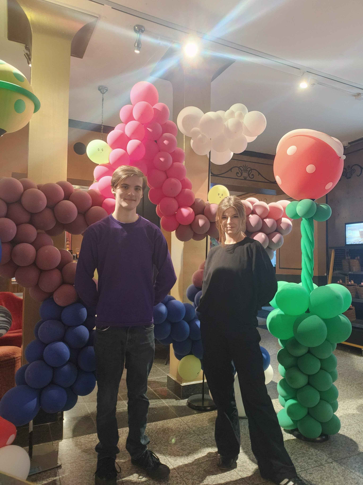
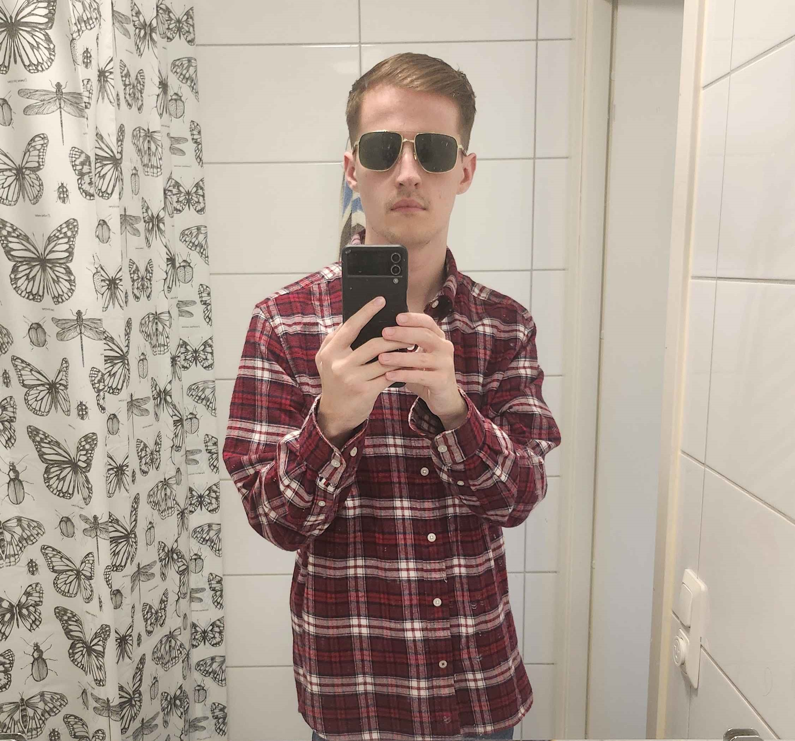
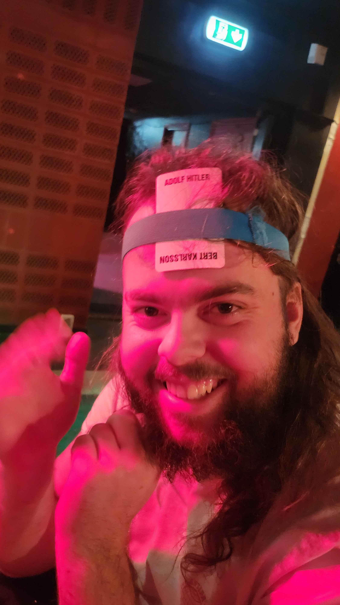

| The Boys Sweden | |
|---|---|
|

Two of the founders of The Boys Sweden.
|
|
| Established | 2025 |
| Origin | Lund University, Lund, Skåne, Sweden |
| Years active | 2025-present |
| Leader | None |
| Notable shenanigans | See list of shenanigans |
| Notable people | See list of The Boys International members |
| Part of | The Boys International |
The Boys Sweden, also known as The SpongeBob Squad, is a group of commies, party animals, and SusFeed writers formed in late 2025 as an expansion to The Boys International. The Boys Sweden is the most diverse of the groups, holding over 10 native languages and as many nationalities. The group operates as one within Chat 3, though operates more splintered outside of the wider group.

With Cameron Impostor moving to Sweden and Kevin's close ties to the country, it was inevitable that some Swedish representation would occur. The group operated as multiple smaller ones for much of its early months, formally becoming a singular faction with the start of Chat 3. The group has regular shenanigans, often involving mostly or all linguists.

The group regularly meets and holds significant power within the leftist nation at Lund University. The group generally partakes in online shenanigans with The Boys International, though usually it keeps to itself. The Boys Sweden is sometimes the most active of the groups, depending on the day.
{kind=link}